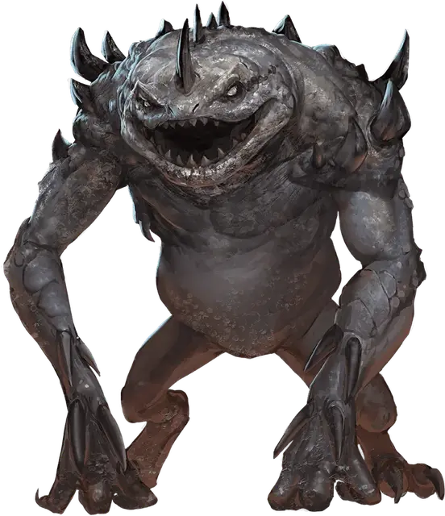

Смертельный слаад
Death Slaad
Средняя Аберрация (Перевертыш), хаотично-злая

Класс Доспеха 18 (природный доспех)
Хиты 170 (20к8 + 80)
Скорость 30 футов
| мод | спас | ||
|---|---|---|---|
| СИЛ | 20 | +5 | +5 |
| ЛОВ | 15 | +2 | +2 |
| ТЕЛ | 19 | +4 | +4 |
| мод | спас | ||
|---|---|---|---|
| ИНТ | 15 | +2 | +2 |
| МДР | 10 | +0 | +0 |
| ХАР | 16 | +3 | +3 |
Навыки Восприятие +8, Магия +6
Сопротивление урону звук, кислота, огонь, холод, электричество
Чувства слепое зрение 60 футов, тёмное зрение 60 футов, пассивное Восприятие 18
Языки Слаадский, Телепатия 60 фт.
Опасность 10 (5900 опыта)
Бонус мастерства +4
Особенности
Перевертыш. Слаад может действием превратиться в гуманоида Маленького или Среднего размера, или принять свой истинный облик. Все его статистики, кроме размера, одинаковы во всех обликах. Все несомое и носимое им снаряжение не превращается. Он принимает свой истинный облик, если умирает.
Врождённое колдовство. Базовой характеристикой слаада является Харизма (Сл спасброска от заклинания 15, +7 к попаданию атаками заклинаниями). Слаад может накладывать следующие заклинания, не нуждаясь в материальных компонентах:
• Неограниченно: волшебная рука [mage hand], невидимость [invisibility] (только на себя), обнаружение магии [detect magic], обнаружение мыслей [detect thoughts], образ [major image];
• 2/день каждое: огненный шар [fireball], полёт [fly], ужас [fear], языки [tongues];
• 1/день каждое: облако смерти [cloudkill], уход в иной мир [plane shift].
Сопротивление магии. Слаад совершает с преимуществом спасброски от заклинаний и прочих магических эффектов.
Магическое оружие. Атаки оружием слаада являются магическими.
Регенерация. Слаад восстанавливает 10 хитов в начале своего хода, если у него есть хотя бы 1 хит.
Действия
Мультиатака. Слаад совершает три атаки: одну укусом, и две либо когтями, либо двуручным мечом.
Укус (только в облике слаада). Рукопашная атака оружием: +9 к попаданию, досягаемость 5 футов, одна цель. Попадание: Колющий урон 9 (1к8 + 5) плюс урон некротической энергией 7 (2к6).
Когти (только в облике слаада). Рукопашная атака оружием: +9 к попаданию, досягаемость 5 футов, одна цель. Попадание: Рубящий урон 10 (1к10 + 5) плюс урон некротической энергией 7 (2к6).
Двуручный меч. Рукопашная атака оружием: +9 к попаданию, досягаемость 5 футов, одна цель. Попадание: Рубящий урон 12 (2к6 + 5) плюс урон некротической энергией 7 (2к6).
Описание
Слаады смерти пропитаны энергией Плана Негативной Энергии и представляют собой злых развращенных существ, которым нравится вредить другим. Они плодят представителей своей расы, принуждая толпы красных и синих слаадов нападать на другие планы. Гуманоиды, пережившие вторжение, становятся инкубаторами для новых слаадов.
См. дополнительно статью: "Бестиарий: Слаады"